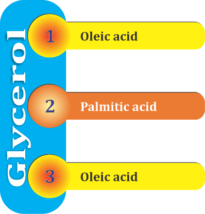
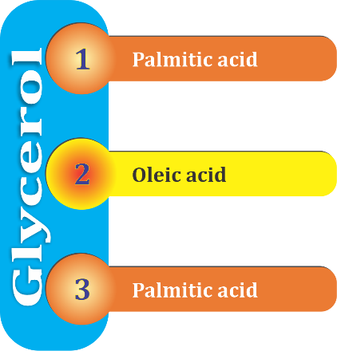

Nuôi con bằng sữa mẹ (NCBSM) là một lựa chọn tối ưu cho sự phát triển toàn diện của trẻ sơ sinh và trẻ nhỏ. Trong sữa mẹ, có đầy đủ các chất dinh dưỡng cần thiết với một tỷ lệ thích hợp với nhu cầu của trẻ sơ sinh và trẻ nhỏ, từ các chất sinh năng lượng (như Protein; Lipid; Glucid), đến các vi chất dinh dưỡng tối cần thiết cho sự phát triển, cũng như sự có mặt của các kháng thể có trong sữa non. Ở bài này chúng ta hãy cùng tìm hiểu, khám phá vai trò quan trọng của chất béo trong sữa mẹ đối với sự phát triển cả về thể lực và trí lực của trẻ ở giai đoạn đầu đời.
Chất béo chỉ chiếm 26,1% trong sữa mẹ, nhưng nó cung cấp tới 44% năng lượng
Trước hết, về khối lượng, trong 100 gam sữa mẹ có 7 gam Glucid; 1,5gam Protein; 3 gam Lipid (chất béo), như vậy về khối lượng, chất béo chỉ chiếm 26,1% trong tổng số các chất sinh năng lượng (Hình 1), nhưng nó lại cung cấp đến 44% trong tổng số năng lượng mà sữa mẹ mang lại (Hình 2).

|
| Hình 1: Khối lượng của các chất sinh năng lượng có trong 100 gam sữa mẹ | Hình 2: % năng lượng được sinh ra bởi các chất sinh năng lượng có trong 100 gam sữa mẹ |
(theo Bảng thành phần dinh dưỡng thực phẩm Việt nam. VDD-2016)
Chất béo có vai trò rất quan trọng đối với sự phát triển thể lực và trí não của trẻ
Chất béo tham gia cấu tạo các tế bào và dịch thể của các tổ chức, đặc biệt là tổ chức não. Các axit béo không no (như Linoleic acid; Arachidonic acid; Docosahexaenoic acid-DHA)…là thành phần của nhiều hợp chất có hoạt tính sinh học cao, là yếu tố cần thiết để cấu tạo màng tế bào, các tổ chức liên kết, tổ chức thần kinh.
Trong những năm đầu đời, trẻ tăng trưởng và phát triển nhanh cả về thể chất và tinh thần, đặc biệt là các tổ chức thần kinh, não bộ…Trọng lượng não tăng nhanh sau khi sinh: lúc sinh não chỉ nặng 350g, lúc 1 tuổi nặng gấp 3 lần (khoảng 1100g). Não bộ và các mô thần kinh đặc biệt giàu chất béo, do đó sự thiếu hụt về chất béo trong khẩu phần ăn hàng ngày ảnh hưởng đến chức phận nhiều cơ quan, đặc biệt là cơ quan thần kinh. Có thể nói chất béo trong sữa mẹ giúp cho sự phát triển về thể lực và trí tuệ của trẻ em ngay từ giai đoạn rất sớm vì nó giữ vai trò quan trọng đối với hệ thần kinh trung ương của trẻ.Ngoài ra, chất béo còn là dung môi tốt để hòa tan các vitamin A, D, E, K là những vitamin có nhiều chức năng quan trọng trong cơ thể, cơ thể muốn hấp thu và sử dụng tốt các vitamin này phải cần có chất béo trong khẩu phần ăn.
Những khám phá kỳ diệu về chất béo ở mức độ phân tử
Với sự tiến bộ của khoa học, ngày nay người ta còn đi sâu tìm hiểu vai trò của từng thành phần chất dinh dưỡng có trong sữa mẹ, trong đó, các nghiên cứu chuyên sâu ở mức độ phân tử về thành phần chất béo có trong sữa mẹ đã mang lại những phát hiện rất quan trọng, giải thích được nhiều ưu điểm của sữa mẹ đối với sự phát triển của trẻ nhỏ, mà chất béo đóng góp một phần không nhỏ.
Về mặt cấu trúc phân tử, hầu hết chất béo trong sữa mẹ dưới dạng triglyceride, hình thành từ sự gắn kết 3 axit béo vào một phân tử glycerol ở các vị trí 1; 2; 3. Các axit béo trong sữa mẹ chủ yếu là axit palmitic (Breckenridge, Marai et al. 2011), vị trí gắn kết của axit palmitic vào phân tử glycerol nói trên sẽ tác động đến tính chất, khả năng hấp thu của chúng trong hệ tiêu hóa đang phát triển của trẻ. Về mặt lý thuyết, trong sữa mẹ, axit palmitic có thể gắn ở các vị trí khác nhau tại 3 vị trí trên phân tử glycerol, nhưng nhiều nhất, tới 70%, là gắn ở vị trí 2, được gọi là sn-2 palmitate, hay beta-palmitate, hay ngắn gọn là OPO (Hình 3; sn là viết tắt từ cụm từ tiếng Anh “stereospecific numbering” chỉ vị trí gắn kết hóa học); Trong khi đó ở sữa bò, hay dầu thực vật, các axit palmitic thường gắn kết ở vị trí số 1; số 3, (gọi là sn-1 hoặc sn-3, hay ngắn gọn là POP (Hình 4). Những thông tin này có vẻ khó hiểu với nhiều người, nhất là không phải chuyên ngành, nhưng nó là căn cứ để giải thích tại sao cũng là chất béo mà lại khác nhau về chức năng và khả năng hấp thu, tiêu hóa đến như vậy?|  |  | |
| Hình 3: Ở sữa mẹ, hầu hết axit palmitic được tìm thấy dưới dạng sn-2 (còn gọi là sn-2 Palmitate, viết tắt là OPO) | Hình 4: trong sữa bò, hay dầu thực vật – các nguồn cung cấp dồi dào axit palmitic, nó ở dưới dạng khác, sn-1 hoặc sn-3 (POP). |
Cấu trúc phân tử chất béo trong sữa mẹ giúp trẻ tiêu hóa tốt nhất, tăng hấp thu lượng canxi
Chất béo khi đi vào ống tiêu hóa, sẽ được tiêu hóa hấp thu nhờ các enzym có sẵn trong các tuyến tiêu hóa của trẻ. Ở trẻ sơ sinh, các enzyme ở miệng, dạ dày, tuyến tụy chịu trách nhiệm phân cắt chất béo từ sữa mẹ (mà chủ yếu là chất béo dạng sn-2 palmitate), để cung cấp các axit béo giữ vai trò quan trọng trong sự tăng trưởng và phát triển của trẻ. Còn với chất béo dạng sn-1, sn-3 palmitate, hệ tiêu hóa non yếu của trẻ sẽ không đủ khả năng phá vỡ các liên kết ở những phân tử này để hấp thu. Do vậy, chúng đi tiếp vào ruột, liên kết với canxi thành “xà phòng canxi” (một dạng hợp chất canxi) không tan.
Việc hình thành “xà phòng canxi” không chỉ ảnh hưởng đến việc hấp thu axit béo mà còn ảnh hưởng đến hấp thu canxi và ảnh hưởng không tốt đến hệ vi sinh đường ruột. Điều này lý giải tại sao trẻ được nuôi bằng sữa bò thì phân thường rắn và đào thải nhiều phân hơn trẻ được nuôi bằng sữa mẹ. Việc hình thành “xà phòng canxi” còn kéo theo một lượng lớn canxi ra ngoài, làm cho trẻ dễ bị thiếu canxi.
Nghiên cứu trên những trẻ được cung cấp một chế độ ăn giàu sn-2 palmitate (OPO) người ta nhận thấy mức độ chắc khỏe của xương cũng tương đương nhóm được nuôi bằng sữa mẹ (Litmanovitz, Davidson et al. 2013).
Chất béo trong sữa mẹ giúp tăng số lượng các vi khuẩn có lợi trong đường ruột, giúp trẻ tiêu hóa tốt nhất
Các dưỡng chất cụ thể của sữa mẹ, trong đó có chất béo dạng sn-2 palmitate (OPO) được chứng minh có liên quan đến việc tăng số lượng các vi khuẩn có lợi như Lactobacillus, Bifidobacteria (Yaron, Shachar et al. 2013). Do vậy, chuyên gia cho rằng sn-2 palmitate quan trọng trong sự phát triển của hệ vi sinh ruột, chống lại nhiễm trùng, có các tác động tích cực khác trên sự phát triển đáp ứng miễn dịch.
Trẻ được nuôi bằng sữa mẹ thường ít quấy khóc, phải chăng do trẻ dễ tiêu hóa, không bị khó chịu, phân mềm và dễ đi hơn, đó là do tác dụng của sn-2 palmitate (OPO) có nhiều trong sữa mẹ.
Các nhà khoa học đã nghiên cứu và đưa ra một chế độ ăn giàu sn-2 palmitate (OPO) cho một nhóm trẻ được nuôi bằng sữa công thức (Litmanovitz, Bar-Yoseph et al. 2014), kết quả cho thấy nhóm trẻ này có thời gian khóc trong ngày ít hơn hẳn nhóm trẻ khác cũng được nuôi bằng sữa công thức nhưng không được làm giàu bằng sn-2 palmitate (OPO).
Bác sĩ Hồng Sơn – Viện Dinh dưỡngTÀI LIỆU THAM KHẢO
1. Breckenridge, W., et al. (2011). "Triglyceride structure of human milk fat." Canadian journal of biochemistry.
2. Litmanovitz, I., et al. (2014). "Reduced crying in term infants fed high beta-palmitate formula: a double-blind randomized clinical trial." BMC pediatrics 14(1): 152.
3. Litmanovitz, I., et al. (2013). "High Beta-Palmitate Formula and Bone Strength in Term Infants: A Randomized, Double-Blind, Controlled Trial." Calcified Tissue International 92(1): 35-41.
4. Yaron, S., et al. (2013). "Effect of high β-palmitate content in infant formula on the intestinal microbiota of term infants." Journal of pediatric gastroenterology and nutrition 56(4): 376-381.
Bài viết phổ biến